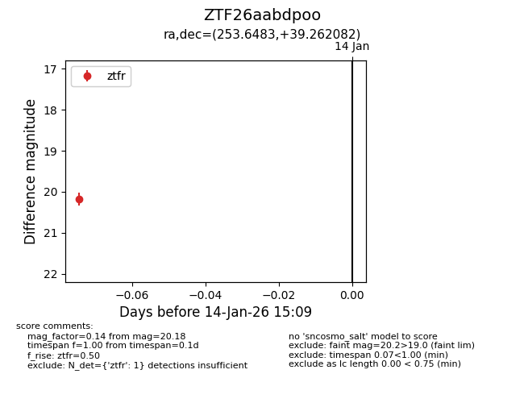
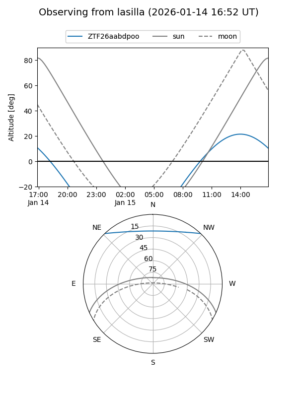
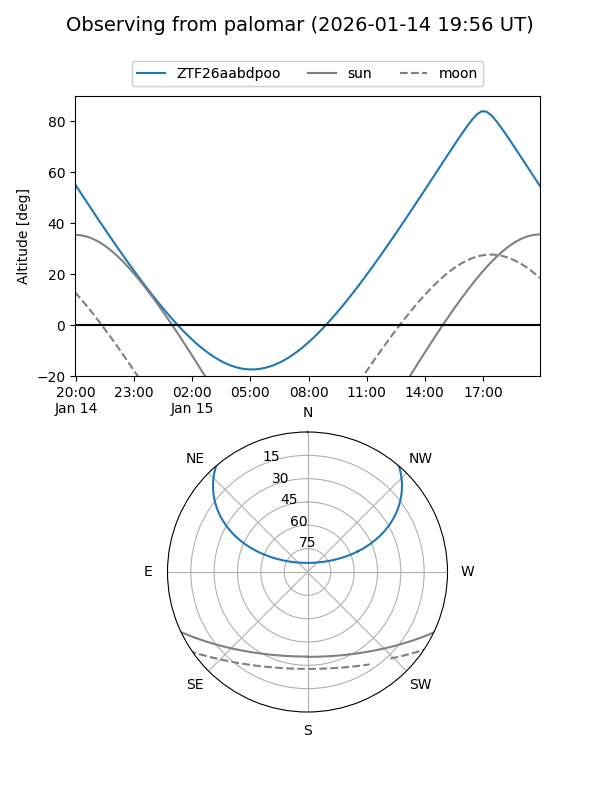

ZTF26aabdpoo
Target ZTF26aabdpoo at 2026-01-14 15:10
Aliases and brokers:
FINK: link
Lasair: link
ALeRCE: link
alt names
ZTF26aabdpoo (ztf,fink_ztf)
Coordinates:
equatorial (ra, dec) = 253.6483,+39.26208
equatorial (HMS+DMS) = 16:54:35.58,+39:15:43.49
galactic (l, b) = (62.9813,+38.67270)
Flags:
Photometry:
last ztfr=20.18
1 ztfr detections
Lightcurve

Visibility


Additional plots